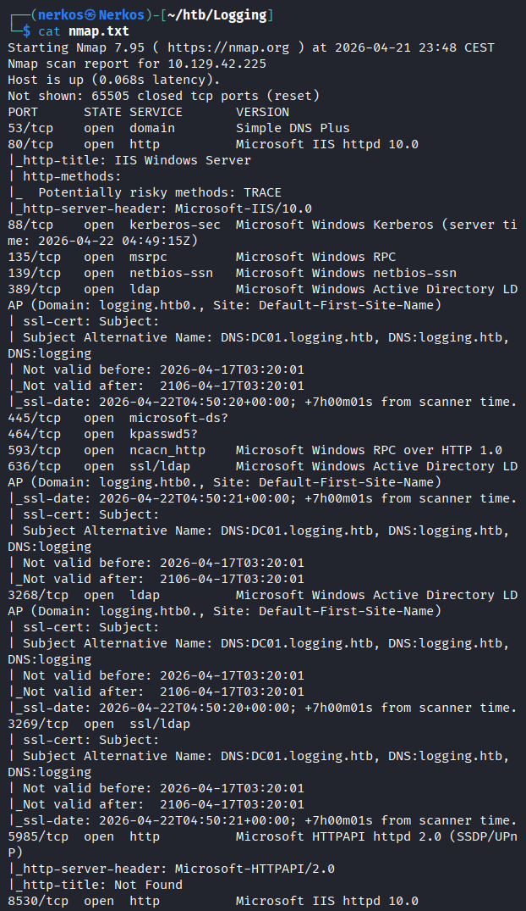
On voit le port 53 (DNS), 88 (Kerberos), 389/ 636/ 3268/ 3269 (LDAP/ LDAPS), 139/ 445 (SMB, partage de fichiers Windows), 5985 (WinRM,Windows Remote Management, équivalent de ssh sur Windows) et on voit aussi le nom de la machine 'DC01' et le nom du domaine 'logging.htb'
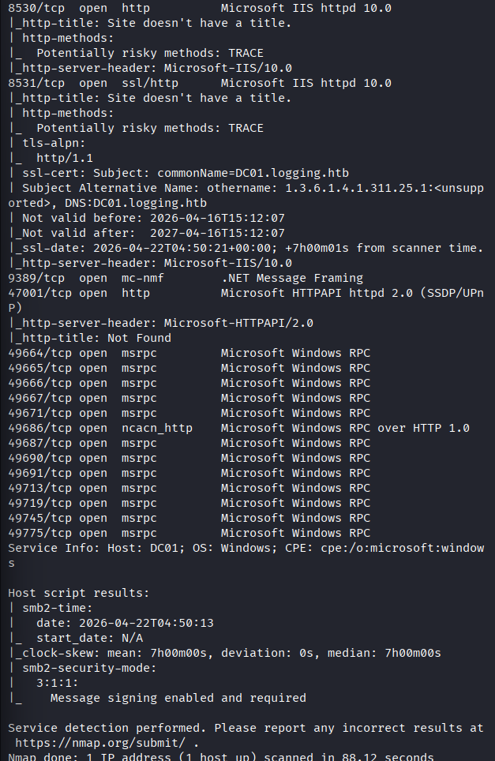
On voit aussi le port 80 (serveur web), 8530/ 8531 (ports par défaut de Windows Server Update Services, service qui distribue les maj Windows aux autres ordinateurs, vecteur d'attaque très connu)
je lance l'outil NetExec pour voir mes droits de lecture et d'écritures sur les fichiers partagés
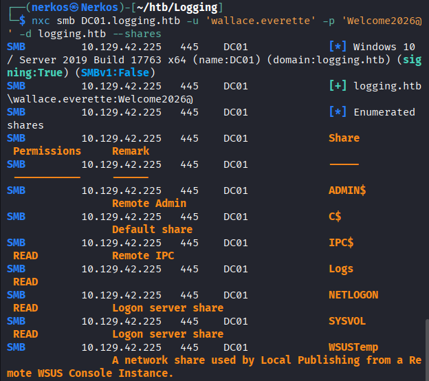
Je vois que j'ai le droit de lecture sur NETLOGON et SYSVOL (partage de fichiers standards et obligatoires sur tous les Contrôleurs de Domaine Windows, ils contiennent les politiques de sécurité GPO) et aussi sur le Logs (pas un partage de fichiers par défaut l'admin l'a créé manuellement)
Je lance l'outil Netexec pour voir si je peux me co avec Wimrm ou non :
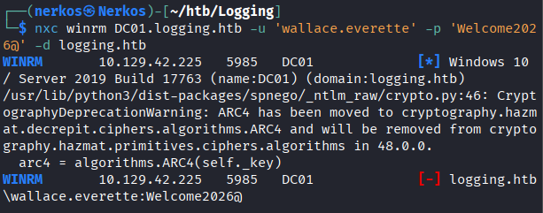
mauvaise nouvelle non, pas possible
je lance l'outil BloodHound pour cartographier l'AD :
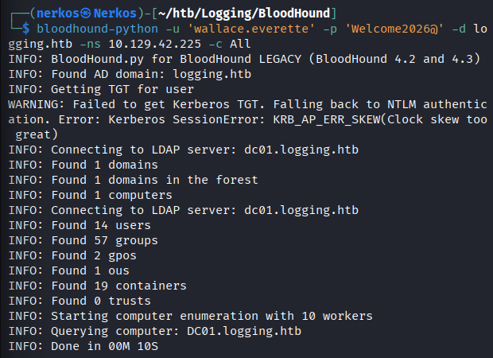
On revient au fichier partagés logs pour voir ce qu'il y a dedans :
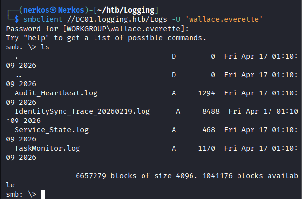
J'ai trouvé 4 fichiers mais je regarde le fichier le plus volumineux qui est 'IdentitySync_Trace_20260219.log' et pèse 8488 octets
Uplaod des 4 fichiers sur ma kali :
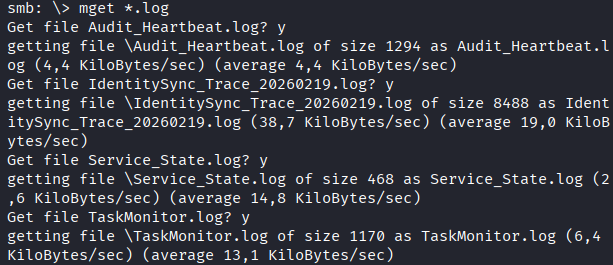
dans le fichier "IdentitySync_Trace_20260219.log" on voit ça :
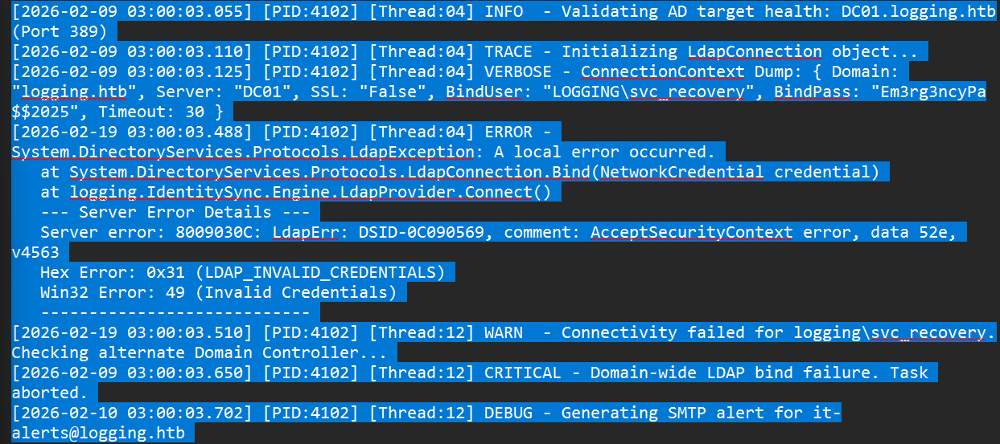
On voit des événement infos ( des événements a survoler pour nous), mais quand on scrolle on voit un événement ERROR pour la connexion avec LDAP et quand on remonte les événements juste avant on voit que l'utilisateur 'svc_recovery' a essayé de se co avec ce mdp 'Em3rg3ncyPa(2x$)2025' a ldap
je viens de vérifier si les crédentiels que je viens de choper du fichier log sont valide pour se co a leur AD :
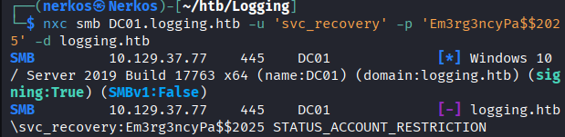
Quand j'analyse la réponse, je vois que le compte est surement dans le groupe 'protected users' donc la connexion ne peut pas se faire avec NTLM obligé qu'elle se fasse avec Kerberos.
je mets a jour mon heure sur mon kali pour correspondre a la machine cible, pcq j'ai vu quand j'ai fait la commande nmap qu'il y a une diff de 7h entre ma kali et la machine cible
je regarde aussi si je peux me co au service de partage de fichier SMB (port 445) avec l'option '-k', pour préciser que cette fois si on utilisera le protocole Kerberos.
j'ai essayé de changer le mdp car je me suis dit comme l'utilsateur que j'ai eu au début avait l'année 2026 dans son mdp peut être que cet utilisateur a fait pareil et a remplacé 2025 par 2026.
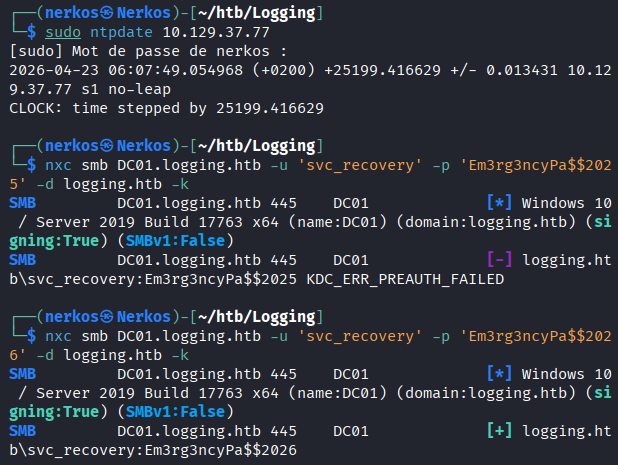
On analysant le résultat on voit que l'utilisateur a bien changé son mdp et on peut se co a smb
c'est aussi grâce a cette étape que je me suis dit que le mdp a peut être était modifier en 2026
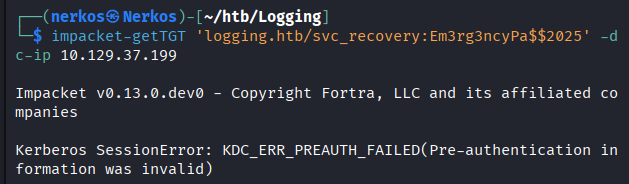
Analyse sur BloodHound
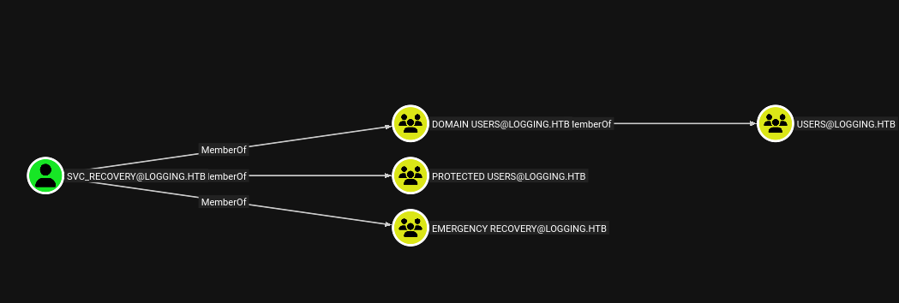
BloodHound confirme mes doutes l'utilisateur fait bien partie des "PROTECTED USERS" mais il fait aussi partie du groupe "EMERGENCY RECOVERY" qui n'est pas un goupe par défaut mais il a été créé par l'admin.
Analyse du groupe "EMERGENCY RECOVERY" qui se compose d'un seul utilisateur qui est "svc_recovery"
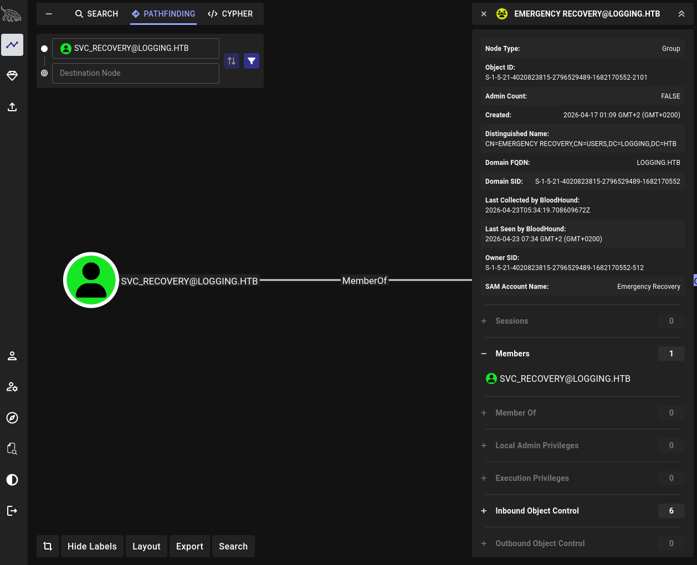
Aucun chemin directe entre notre utilisateur et le domain admin
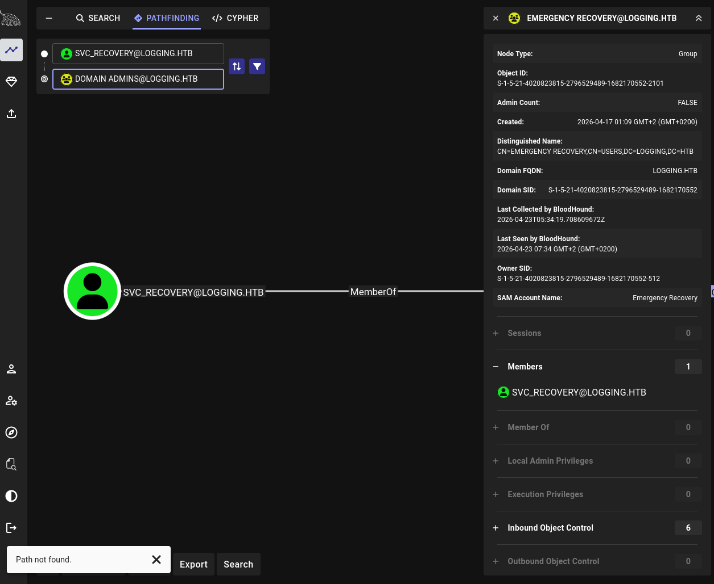
Donc aucune faille de configuaration dans les droits ACL
'svc_recovery' a le droit de lecture sur les mêmes dossiers partagés que 'wallace.everette'
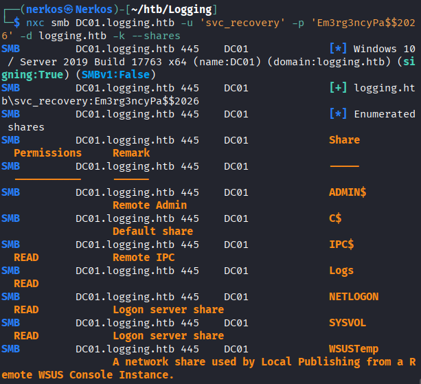
je viens de repartir sur BloodHound pour voir si je n'ai pas bien analyser avant pcq je suis bloqué :
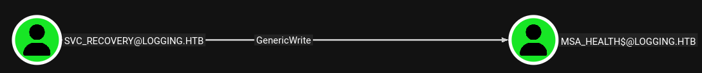
Et je viens de voir que l'utilisateur 'svc_recovery' a les droit GenericWrite sur 'MSA_HEALTH$' ça veut dire que je peux modifier quasiment toutes les propriétés de ce compte
Donc j'analyse l'utilisateur 'MSA_HEALTH$' et je vois ses groupes :
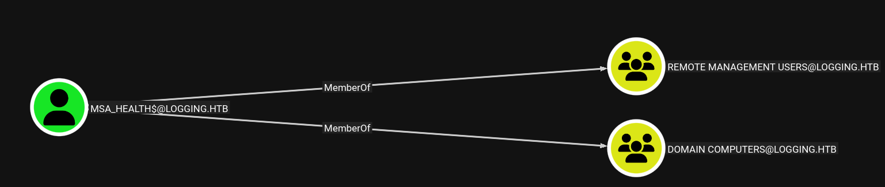
il a appartient a ses 2 groupes : 'Remote Management' (ça veut dire qu'avec les utilisateurs de ce groupe je peux me co avec Winrm) et a 'Domain Computers'
je remontre a mon termianal le chemin du TGT :
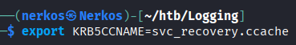
Grâce a la découverte de Generic write sur le compte 'MSA_HEALTH$' j'ai pu exécuter cette commande pour pour génére une paire de clés (une publique et un privée)sur ma machine kali et de l'écrire sur le profil de MSA pour que je puisse m'authentifier a son nom
bloodyAD : c'est un couteau suisse qui permet d'envoyer des ordres d'administration directement au Contrôleur de Domaine depuis Linux. Avec ça, si j'ai les bons droits, je peux tout faire : créer un utilisateur, changer un mot de passe, donner les pleins pouvoirs à quelqu'un, ou encore modifier l'annuaire DNS de l'entreprise.
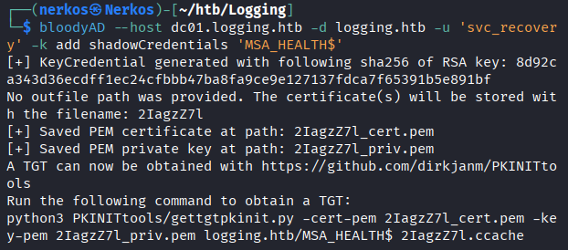
je suis les étapes du résultat de la dernière commande :
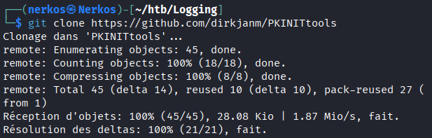
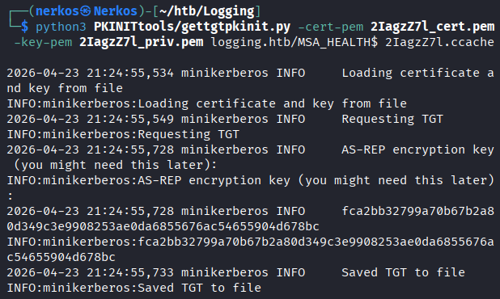
je charge mon nv TGT en mémoire et je lance lance l'extraction du NT hash du TGT
Grâce au AS-REP que j'ai reçu lors du résultat de la dernière commande :
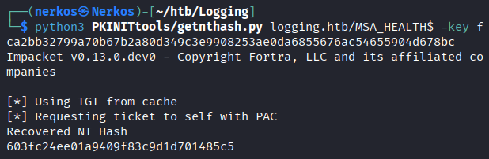
grâce à ce NT Hash je peux me co avec evil-winrm sans avoir besoin du mdp de l'utilisateur
Connexion a la session de l'utilisateur msa_heatlh$ grâce au NT Hash
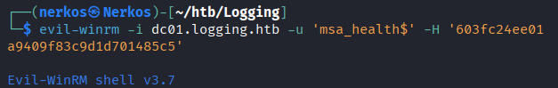
On débarque directement dans le dossiers Documents :
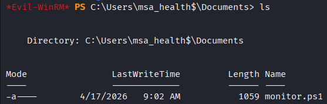
Je vois ce script :
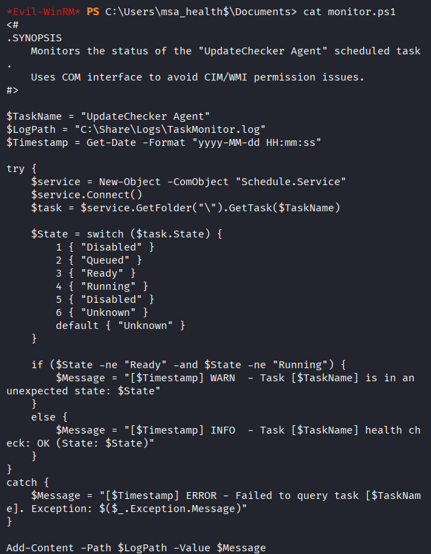
je regarde mes privilèges sur la machines :
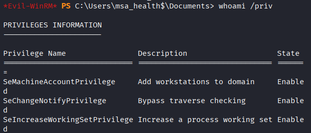
rien d'anormal
j'ai aussi regardé à quelle groupe de sécurité j'appartenais :
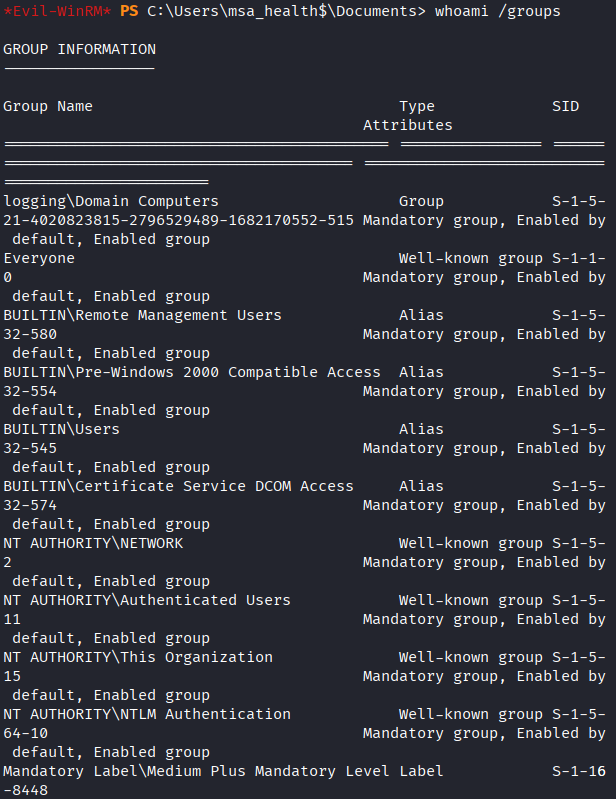
Je vois que je suis bien un compte machine pas un humain, que aussi je peux me co en distanciel (comme je le fais en ce moment), rien d'anormal aussi
Je regarde les utilsiateurs que se sont déjà connectés à cette machine :
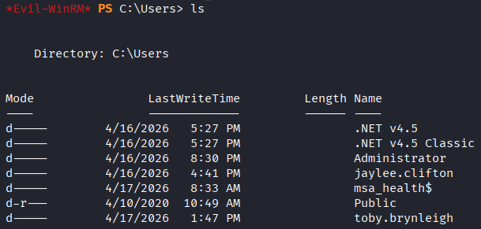
je vois 2 utilisateurs intéressants : 'jaylee.clifton' et 'toby.brynleigh'
J'analyse les fichiers du dossiers Program Files où je peux trouver des .exe
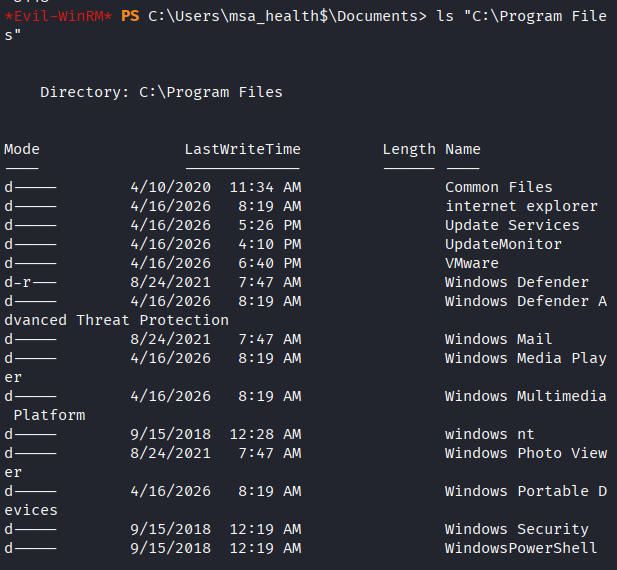
La plupart des fichiers que je vois ici sont apparitiennent a Windows, le seul qui sort du lot c'est le fichier UpdateMonitor
J'analyse le dossier caché ProgramData où les logiciels stockent leurs logs, et parfois des dossiers d'échange
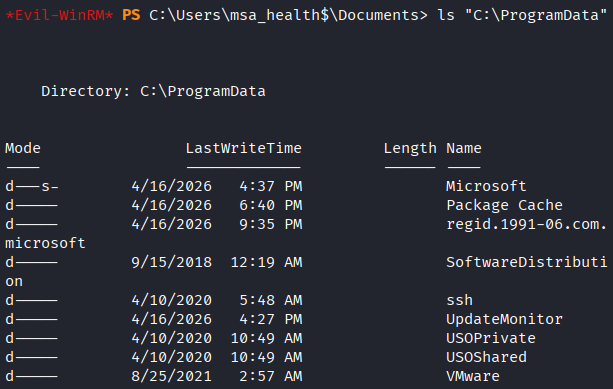
UpdatMonitor on le revoit ici aussiAnalyse des droits du fichier UpdatMonitor dans le dossier ProgramFiles :
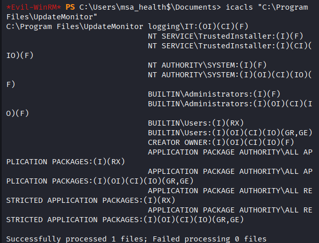
Rien d'anormal j'ai que le droit de lecture (I) et d'exécution (RX)
Analyse des droits du fichier UpdatMonitor dans le dossier ProgramData :
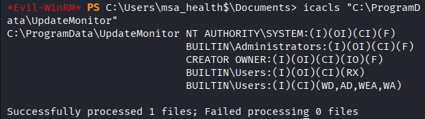
Premier ligne pour les Users j'ai le droit de lire mais quand on regarde la 2e ligne j'ai le droit de j'ai tout les droits d'écriture sur de fichier
j'upload le dossier UpdateMonitor pour povoir l'analyser sur ma machine kali :
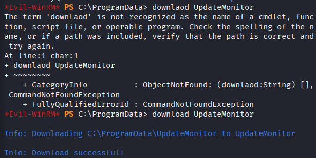
en analysant ce fichier j'ai remarqué que plusieurs fois je voyais le même fichier .zip :
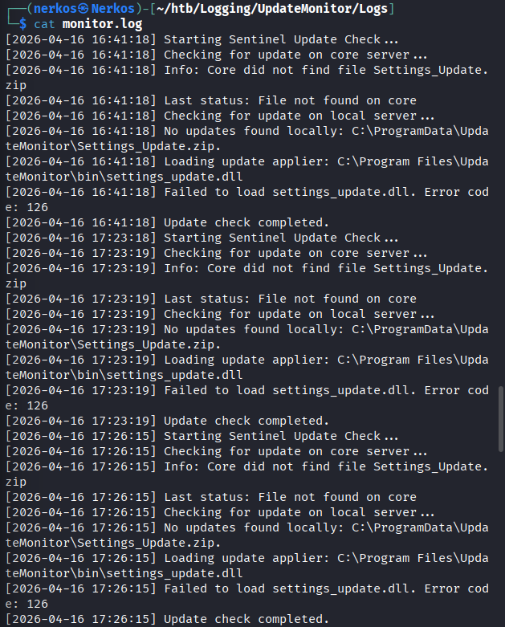
Après l'analyse j'ai vu que la même action se répète
l'attaque commence a se déssiner comme pour faire la maj cette tâche cherche un fichier .zip et après va extraire le .zip pour un fichier .dll on va faire un Dll Hijacking, on va crée le reverse shell le mettre dans le .zip et après on va mettre .dll dans un .zip
création du reverse dans le fichier .dll :
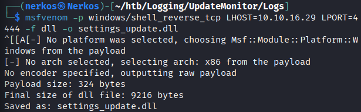
l'ajout du fichier .dll dans le fichier .zip
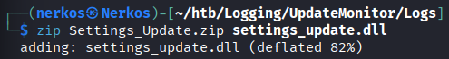
j'ai ouvert le port d'écoute :
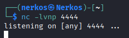
Upload de notre fichier .zip
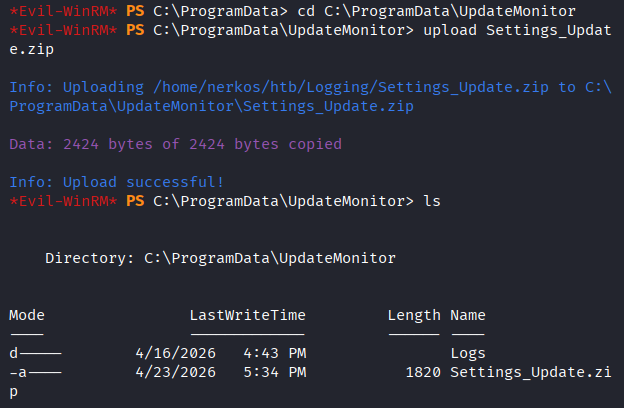
je vois mon shell dans le port d'écoute :
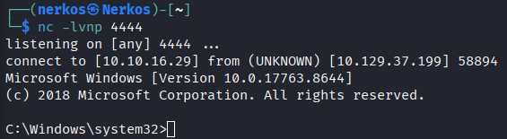
l'utilisateur avec lequel je me suis co :
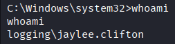
Récupération du flag user :
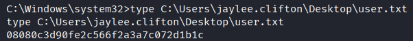
j'ai intallé Rubeus.exe sur ma session kali actuelle et après je j'ai upload avec ma session Evil-WinRM
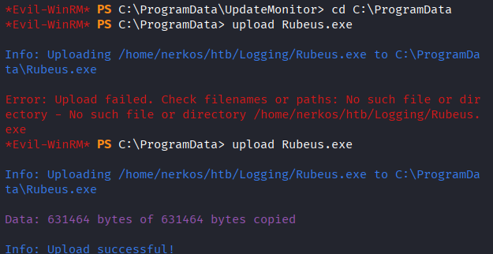
Avec ma session Jayleen je lance ./Rubeus.exe, j'ai demandé au contrôleur de domaine de me faire un TGT pour me co a un service distant (un TGT délégable) et après que le TGT a été préparé par le controleur de domaine Rubeus a intercepté ce ticket
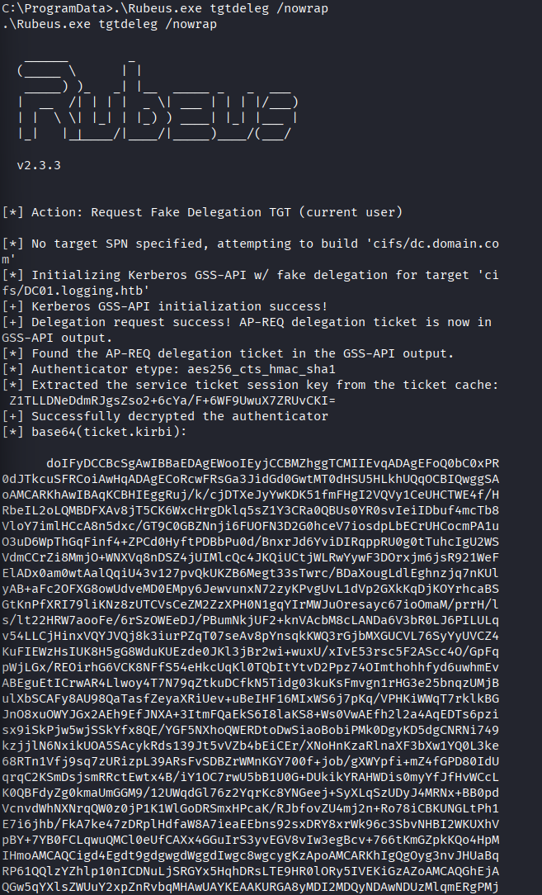
je mets ce hash en base 64 dans un fichier sur ma kali :
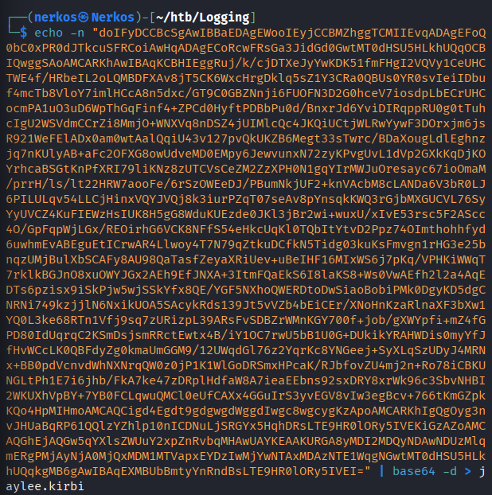
je demande a mon kali d'utiliser ce nv fichier par défaut
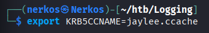
j'utilise le script ticketconverter (que j'ai trouvé sur github) pour convertir le fichier du hash en ccache :
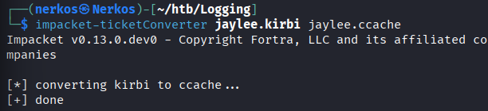
Avec cette commande j'énumère les certificats dans l'AD avec l'outil certipy qui est un scanner spécialisé dans la recherche de failles liées a L'ADCS
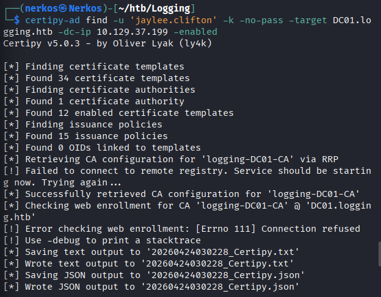
Le résultat de la commande c'est un fichier .txt que je peux utilisée pour savoir qu'elle porte dérobée je peux attaqué pour faire une escalade de privilèges
j'ai cherché dans le fichier .txt le mot 'Vulnerabilities' et 'vulnerability'
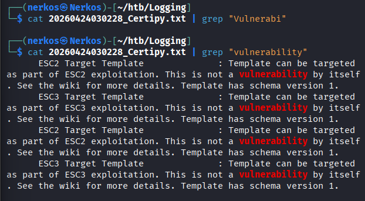
Pour 'Vulnerabilites' je n'ai rien trouvé et pour 'vulnerability' le résultat n'est pas concluant donc je me suis dit je vais affiché tout le fichier pour rechercher manuellement :
le modèle mal configuré est 'UpdateSrv'
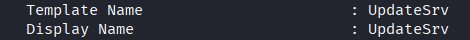
C'est sur true ça veut dire que le serveur me laisse choisir le nom qui sera écrit sur le certificat.
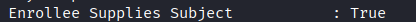
y a le domaine IT qui est le groupe de jaylee donc je peux demander ce certificat
Donc avec cette capture on voit que le badge sert uniquement a prouver qu'on est une machine donc on ne pourra pas faire l'attaque classique ESC1 (se connecter en tant qu'Administrateur)
Donc après le résultat de ces commandes, j'ai trouvé le modèle UpdateSrv qui d'après nos résultats est un modéle de badge défectueux (la fameuse faille Enrollee Supplies Subject : True) qui nous permet de taper nous mêmes le nom qui sera imprimé sur le badge et comme on pourra pas demander au nom de l'Administrateurs on va la demander au nom du DC01$ car ce n'est pas un utilisateur
j'export le jaylee.ccache pour le charger en mémoire et se co avec avec l'option -k et -no-pass :
je remet l'heure exacte de la machine cible (pour être sur)
le nom de la machine, on l'a vu précédemment certipy.txt :
Pareil pour le nom de l'Autorité de certification (CA)
Avec toutes les infos qu'on a collecté précédemment, on a pu exécuter cette commande, pour créerr le badge au nom du WSUS (wsus.logging.htb) :
On extrait le certificat en format texte, on extrait la clé en format texte et après on copie le texte des deux fichiers dans le fichier wsus.pem car le .pfx est un format windows et non pas linux et j'ai était obligé de faire ces commandes pour utiliser le fichier .pem pour notre faux serveur
Avec cette commande je fais une attaque d'Empoisonnement DNS (DNS Poisoning), j'utilise les droits de Jaylee avec ticket kerberos, je force de le Contrôleur de Domaine à rediriger tout le traffic destiné au serveur de maj directement vers ma machine kali
Vérification que le serveur de maj a bien été modifié :
On voit bien mon IP
on crée une bulle venv on rentre dedans et on installe wsuks :
Comme le rôle de WSUS est de télécharger les maj de Windows et après dans une entreprise tout les pc se connectent à ce serveur pour télécharger récupérer les maj windows et surout les ordinateus exécutent ces maj avec les droits absolus (SYSTEM)
On lance notre faux serveur et on lance la commande 'Add-ADGroupMember -Identity "Domain Admins" -Members "MSA_HEALTH$"' pour demander a PowerShell de rajouter msa_health au Domain Admins
l'outil WSUKS est pour lancer un faux serveur qui remplace le vrai serveur Wsus
Après cette commande l'utilisateur msa_health$ aura les droits system
Donc on relance un nouveau Evil-Winrm avec ces droits maj :
le flag root ne se trouve pas dans le Desktop de l'Administrators
mais dans celui de Toby